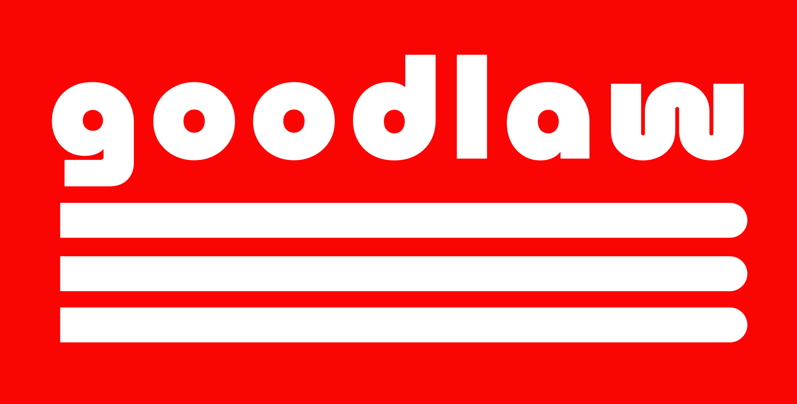

Goodlaw Forum
Exploring ways to make the immigration process more welcoming
What is the Goodlaw Forum?
Our mission is to unite immigrant communities and explore ways to make the immigration process more welcoming
We collaborate with groups that represent immigrant communities. And we sponsor events which they organize
The Goodlaw Forum is an initiative from Access to Justice, Inc - an early stage Silicon Valley tech startup. Our goal is to learn from immigrants about potential problems we might help them solve. We are passionate about immigration because we are immigrants ourselves
Our team
The Goodlaw Forum is a new initiative which has been launched by several high profile immigrants to America
Pat Kiernan
Pat has been morning news anchor of NY1 since 1997. He is widely known in New York City and has apeared in cameos as himself in movies like Spiderman, Night at the Museum and Ironman (Check our Pat's Wikipedia)
{kind=link}
Ben Mulroney
Ben was the host of Canadian Idol and of several of the most watched TV shows in Canada. Ben has a deep connection to America since his father was the Prime Minister of Canada who signed the NAFTA free trade agreement (Check our Ben's Wikipedia)
{kind=link}